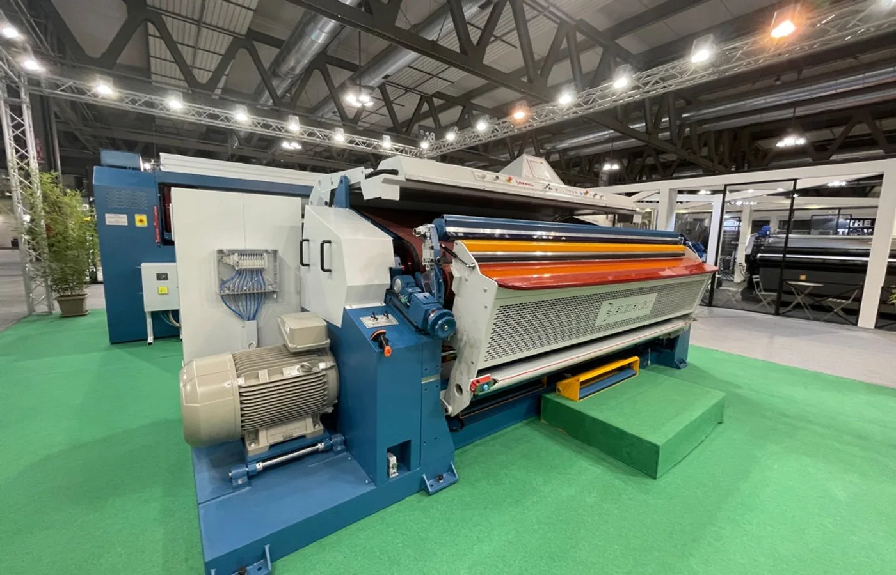
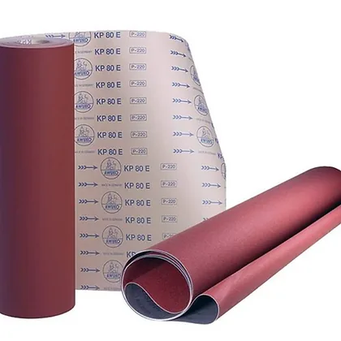
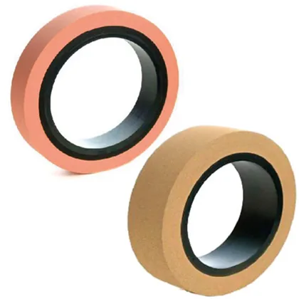
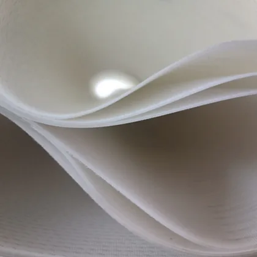
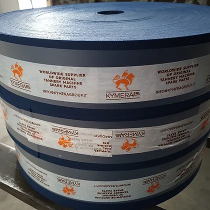
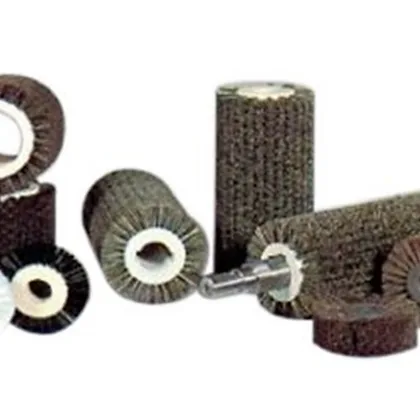
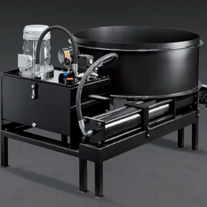

Buffing
Machine
Parts
The right spare parts and consumables to keep your leather buffing machine running smoothly and efficiently — AWUKO buffing paper, rubber sleeves, antistatic belts and the wear components that make the difference on the production floor.

Premium Spare Parts
Reliable components for seamless operation — sleeves, brush cylinders, belts and drive parts sourced or made to your machine's exact specifications.
High-Quality Consumables
Durable and effective products to keep your buffing machines in top condition — AWUKO buffing paper, antistatic belts and every consumable your finish depends on.
Expert Tips & Videos
Access valuable insights and tutorials to maximise efficiency and finish quality — from buffing paper application to troubleshooting common defects.
Spare Parts & Consumables
For Leather Buffing Machines
Our extensive inventory includes everything you need to maintain and optimise your buffing machines — enhancing their performance and lifespan. On this page you will find some examples of the most common parts and consumables for leather buffing machines, together with practical, hard-won tips from our technical team.
Need a specific part for your machine? Tell us the brand, model and what you're replacing, and we'll source the exact component — original or compatible — for you.
Most Requested
Parts & Consumables
From the abrasive paper that does the work to the rubber sleeves, belts and brushes that keep it running clean — a selection of the parts we ship most often to tanneries.

Buffing Paper — AWUKO
Premium AWUKO sandpaper rolls in the full range of grits — coarse for first-pass aggressive buffing, fine for surface preparation and final finish.
Request a Quote
Rubber Sleeve
Custom-made rubber sleeves for buffing rollers — diameter, length and hardness produced to your exact machine specification.
Request a Quote
Antistatic Conveyor Belts
Eliminate static, protect operators, keep the leather finish clean. Antistatic belts cut dust pickup and reduce fire risk in extraction systems.
Request a Quote
Drive Belts
Sized and reinforced for continuous duty — the right transmission belt for your buffing machine drive, in stock or custom-cut.
Request a Quote
Brush Cylinder
Cleaning brush cylinders for surface dust removal — protects the abrasive paper and keeps the leather finish defect-free.
Request a Quote
Compacting Machine
Compacting machines and rollers for buffing line preparation and finishing — improving the surface for a uniform buff.
Request a QuoteHow to Apply
Buffing Paper on a
Leather Buffing Machine
A clean, properly-tensioned sheet of buffing paper is the difference between a uniform finish and a batch of rejects. The procedure is fast once you've done it a few times — here are the steps our technicians use.
- Stop the machine and isolate the power before opening any guard.
- Loosen the buffing roller tensioner and remove the worn buffing paper.
- Clean the roller surface and check the rubber sleeve for damage or unevenness.
- Slide the new AWUKO buffing paper around the roller with the abrasive side facing outward.
- Align the seam, re-tension the paper and rotate the roller by hand to verify the seating.
- Close the guard, restore power and run a short test cycle before production.
Two Decades of
Buffing Expertise
With over twenty years of experience in the leather industry, Kymera Group is your trusted partner for maintaining top-tier performance in your buffing machines. Our commitment to quality and customer satisfaction ensures you get the right solution for your production.
20+ Years of Expertise
Two decades inside tanneries means we know what wears, what lasts, and which compromise is acceptable on your line.
Original & Compatible Parts
From AWUKO buffing paper to custom rubber sleeves — original brand consumables and high-quality compatible parts where they make sense.
Tailored Solutions
Tell us your machine, your leather and your defects — we'll come back with the right part and a practical answer, not a generic catalogue line.
Your Questions,
Answered
How do I apply buffing paper on a leather buffing machine?
Stop the machine and isolate power. Loosen the buffing roller tensioner, remove the old paper, clean the roller surface, then slide the new AWUKO buffing paper around the roller with the abrasive side facing outward. Align the seam, re-tension and rotate the roller by hand to check the seating before restarting.
Which AWUKO buffing paper grit should I use?
Coarser grits (P40 – P80) are used for first-pass aggressive buffing on raw or corrected leather; finer grits (P120 – P320 and finer) are used for surface preparation and final finish. The correct grit depends on your leather, your machine and the look you want — contact us for a recommendation.
Are antistatic conveyor belts really necessary?
Yes. Buffing generates significant static charge that attracts dust to the leather surface and creates a fire risk in the dust extraction system. Antistatic conveyor belts dissipate the charge safely and dramatically improve finish cleanliness.
Do you supply spare parts for all buffing machine brands?
Yes. We supply spare parts and consumables compatible with the major leather buffing machine brands. Share your machine brand, model and the part needed and we will confirm compatibility before quoting.
Can I order a custom rubber sleeve?
Yes. Rubber sleeves are made to your buffing roller specifications — diameter, length and hardness. Send us the dimensions and we will produce the right sleeve for your machine.
Why is my buffing finish uneven?
Common causes are worn buffing paper, an uneven rubber sleeve, incorrect roller pressure, a worn brush cylinder, or static build-up. Our team can help diagnose the issue — send a description of the defect and a photo if possible.
Send Your Request
Tell us your buffing machine brand and model, the part you need and the quantity — we'll come back to you with the right component, the right price, and a clear lead time.